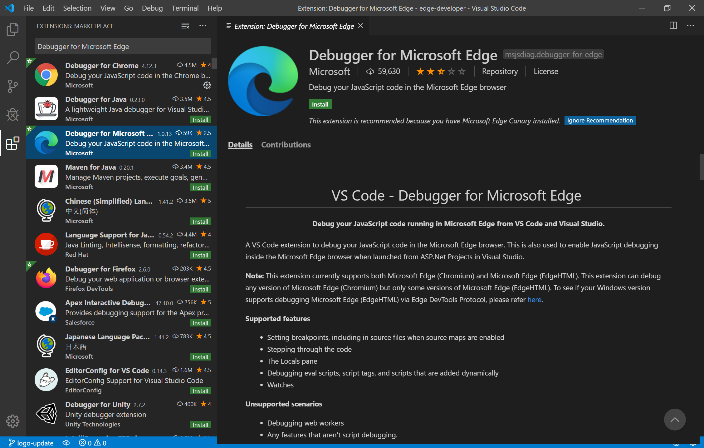

Integrated Development Environment
Uma IDE (Integrated Development Environment) ou Ambiente de Desenvolvimento Integrado, é um software que é usado para auxiliar os desenvolvedores, com a função de otimizar diversos processos. Uma IDE apresenta características próprias.
Características:
- Editor: Usado para editar o código fonte, como também, para escrever comandos para determinada linguagem de programação ou de marcação.
- Compilador: Essa características faz com que a IDE consiga compilar um código-fonte de um software, transformando o código escrito pelo desenvolvedor em uma linguagem que a máquina entende.
- Debbuger: Função utilizada para auxiliar no busca por erros e defeitos que estiverem atrapalhando o bom funcionamento do software.
- Geração automática: Esse atributo permite que a IDE gere códigos, que torna mais rápido o processo de desenvolvimento de um programa.
- Refatoração: Essa propriedade traz uma melhoria, que ajuda a otimizar a construção de um código, pois ela é um conunto de testes automatizados, que garantem não só uma melhoria a cada etapa no seu código, mas também, ajuda na correção de erros.
Vantagens:
- Ajuda no aumento da produtividade, visto que uma IDE tem várias ferramentas que consegue otimizar o tempo do desenvolvimento.
- É possível programar diversas linguagens em apenas um software, condição que otimiza o espaço da máquina, como também, os gastos.
- Facilita a condificação de uma aplicação, pois as IDE contém ferramentas para ajudar na solulão de bugs e ferramentas que torna não necessário digitar o comando por completo.
Desvantagens:
- Algumas IDE são pagas, o que torna mais difícil sua aquisição pela comunidade mais humilde.
- As IDE podem tornar os desenvolvedores "preguiçosos" , já que a mesma traz funções para facilitar a codificação, funções essas que não tem em um editor de texto simples.
Exemplos de IDE
- Visual Studio Code
- Sublime Text
- Eclipse
- Android Studio
Visual Studio Code
O Visual Studio Code é uma IDE desenvolvida pela Microsoft para macOS, Windows e Linux, essa IDE é um software livre ou seja de código-fonte aberto, a mesma consegue codificar em diversas linguagens, devido a sua opção de inserir extensões, como também, pode ter seu visual mudado e pode colocar atalhos no teclado para facilitar o desenvolvimento.

Sublime Text
O Sublime Text é uma IDE desenvolvida para Linux, MacOS e Windows, essa IDE tem código-fonte aberto, porém a mesma pode ser comprada, essa IDE consegue codificar linguagens Python, HTML e também pode ter funcões adicionadas pelo próprio usuário através de plugins.

Eclipse
O Eclipse é uma IDE que foi desenvolvida para a codificação em linguagem Java, porém ela suporta diversas linguagens através de plugins que podem ser instalados na mesma, essa IDE tem o código-fonte aberto. Atualmente, esse software é a IDE mais utilizada para a programação em linguagem Java.
Android Studio
O Android Studio é uma IDE que tem o objetivo de desenvolver aplicações para a plataforma Android. Essa IDE pertence a empresa Google, ela está disponível para download nas plataformas Windows, Linux e MacOS, é possível fazer seu download de forma gratuita.